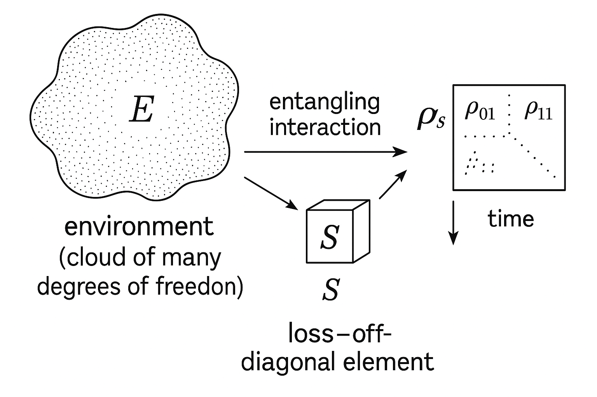
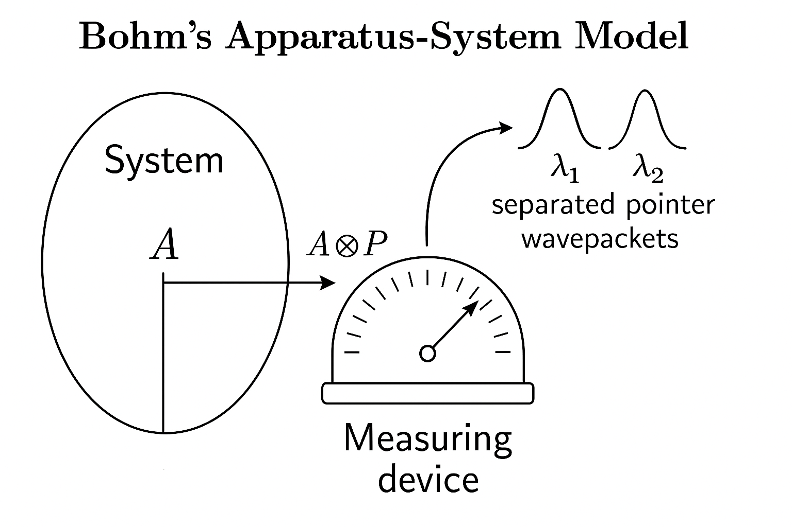
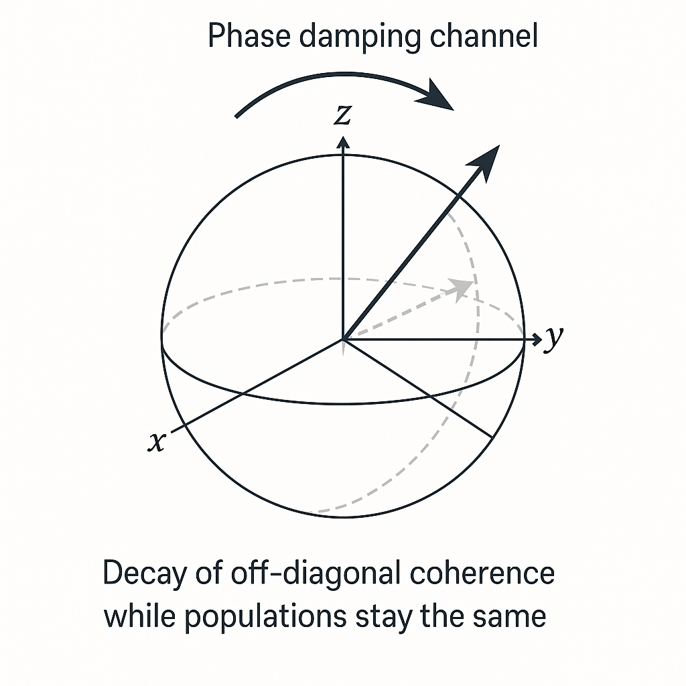
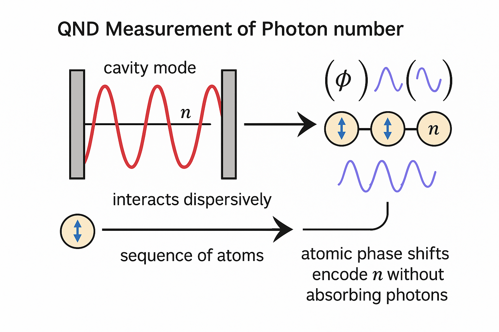
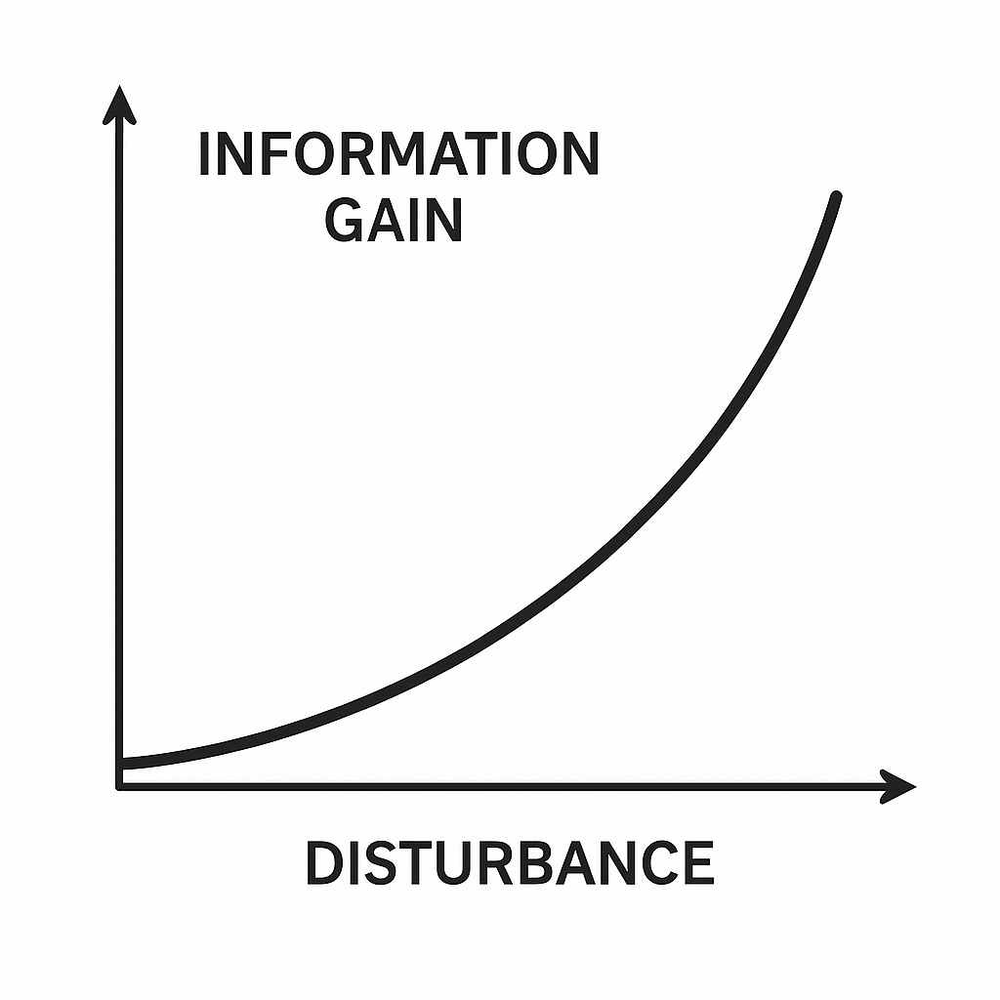
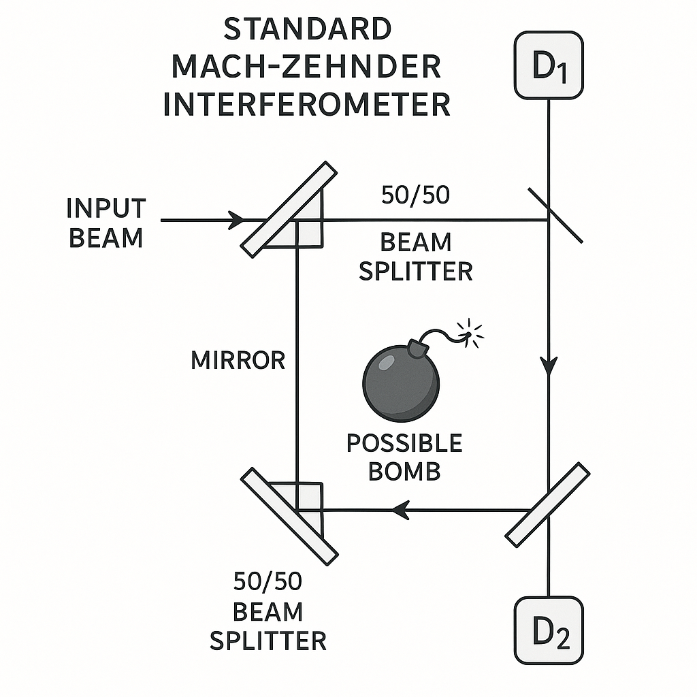
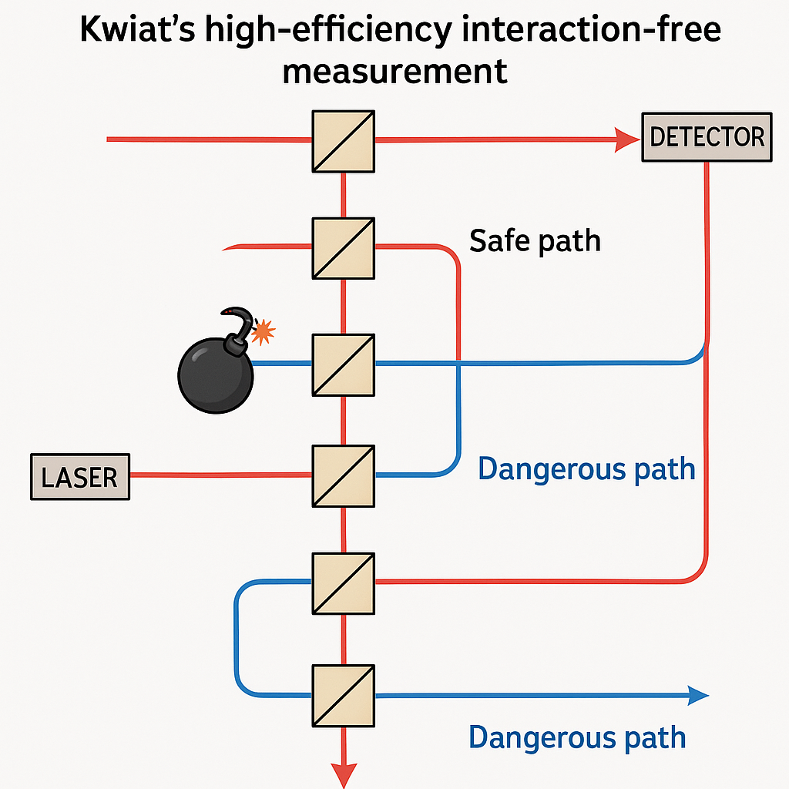
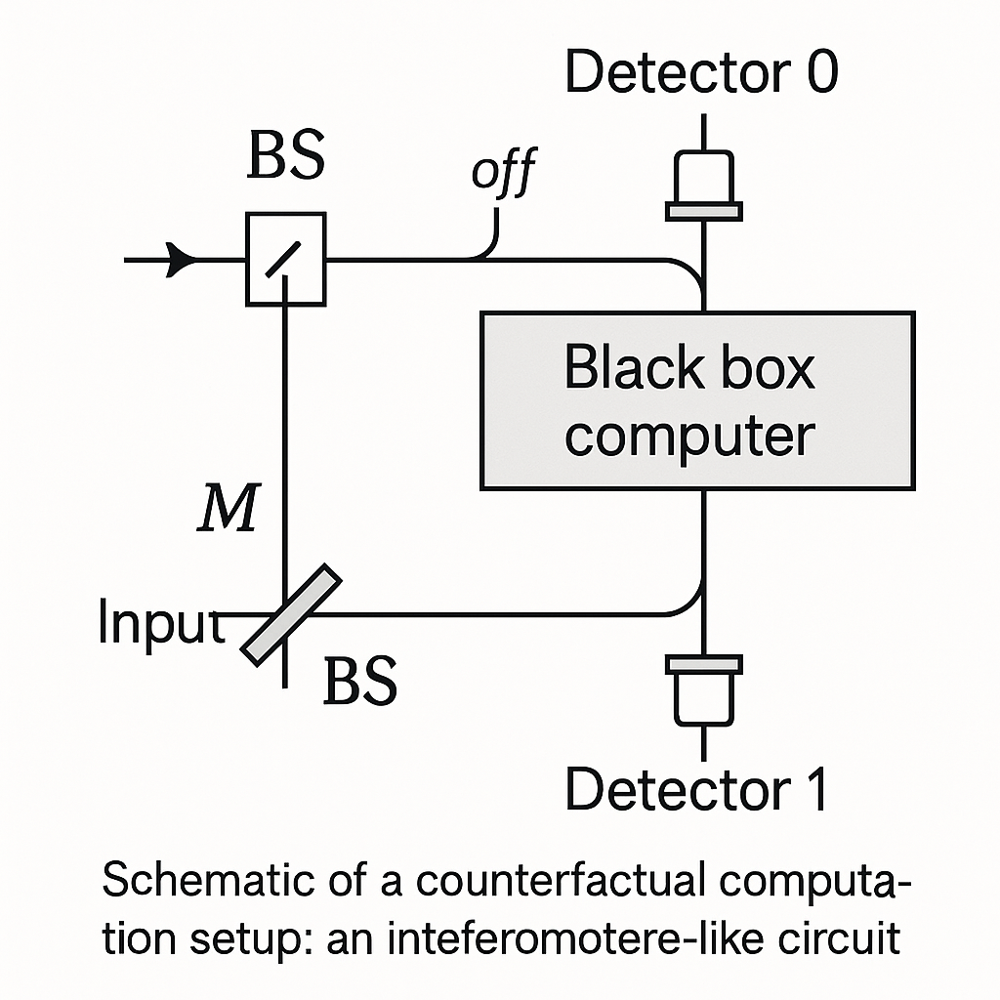
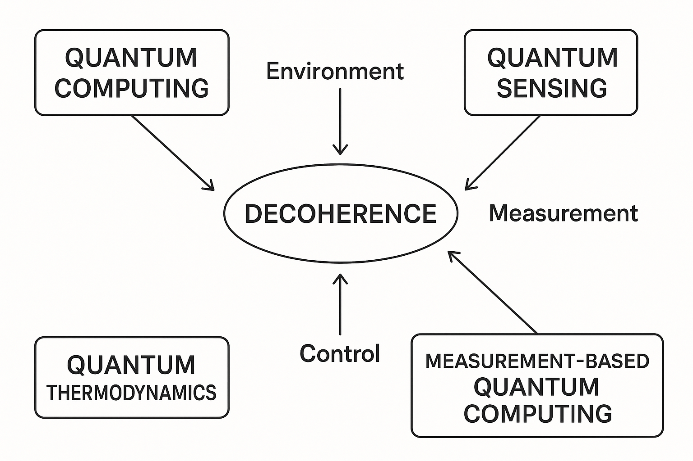

Generated by ChatGPT on 2025-12-16
逐字稿下載：ChatGPT_zh_L09_第_9_講_Decoherence主題_9.txt
完整音檔：
Segment 1:
Segment 2:
Segment 3:
Segment 4:
Segment 5:
Segment 6:
Segment 7:
Segment 8:
Segment 9:
Segment 10:
Segment 11:
Segment 12:
Segment 13:
本講將把前幾講中分散出現的退相干與測量概念，整合成一個較完整的結構。主軸如下：
在當代退相干理論中，我們通常把觀察對象拆分為系統 \(S\) 與環境 \(E\)：
假設初始時刻 \(t=0\)： \[ \lvert \Psi(0)\rangle = \Big( \sum_i c_i \lvert s_i\rangle \Big) \otimes \lvert E_0\rangle , \] 其中 \(\{\lvert s_i\rangle\}\) 是某個系統基底（尚未知是否為「指標基底」），\(\lvert E_0\rangle\) 為環境初態。系統與環境演化服從總哈密頓量 \[ H = H_S + H_E + H_{\text{int}}, \] 總態 \[ \lvert \Psi(t)\rangle = U(t)\lvert \Psi(0)\rangle, \quad U(t) = e^{-iHt/\hbar}. \]
退相干的核心在於：環境對不同行為態 \(\lvert s_i\rangle\) 的「記錄」 使得系統態的相對相位對任何僅觀察系統的實驗者變得不可見。形式上：
\[ \lvert \Psi(t)\rangle = \sum_i c_i \lvert s_i\rangle \otimes \lvert E_i(t)\rangle, \]若滿足 \[ \langle E_j(t) \mid E_i(t) \rangle \approx \delta_{ij}, \] 則系統的約化密度矩陣 \[ \rho_S(t) = \mathrm{Tr}_E\bigl[ \lvert \Psi(t)\rangle\langle \Psi(t)\rvert \bigr] \] 將趨近於半經典對角形式。
具體計算： \[ \rho_S(t) = \sum_{i,j} c_i c_j^* \lvert s_i\rangle\langle s_j \rvert \, \langle E_j(t) \mid E_i(t)\rangle. \] 若 \(\langle E_j(t) \mid E_i(t)\rangle \approx 0\) 對 \(i\neq j\)，則 \[ \rho_S(t) \approx \sum_i |c_i|^2 \lvert s_i\rangle\langle s_i \rvert, \] 這就是退相干：純態疊加的「干涉項」被環境「洗掉」，只剩經典機率混合。
指標基底（pointer basis） 定義為在與環境交互作用下最穩定、不易產生相干疊加的那組基底。形式上，若系統–環境相互作用為 \[ H_{\text{int}} = \sum_\alpha A_\alpha \otimes B_\alpha, \] 退相干往往在 \(A_\alpha\) 的共同本徵基底上發生，使得該基底成為自然的「經典極限」基底。

考慮一個二能階系統（qubit）\(\{|0\rangle,|1\rangle\}\) 與一個環境模式，交互作用為 \[ H_{\text{int}} = \hbar g \sigma_z \otimes \hat{p}, \] 其中 \(\sigma_z\lvert 0\rangle = \lvert 0\rangle\)，\(\sigma_z\lvert 1\rangle = -\lvert 1\rangle\)，\(\hat{p}\) 為環境的動量算符。假設環境初態為高斯波包 \(\lvert \phi_0\rangle\)，系統初態： \[ \lvert \psi_S(0)\rangle = \alpha\lvert 0\rangle + \beta\lvert 1\rangle. \] 演化算符： \[ U(t) = e^{-iH_{\text{int}}t/\hbar} = e^{-igt\,\sigma_z \otimes \hat{p}}. \]
作用在系統–環境初態： \[ \lvert\Psi(t)\rangle = U(t)\bigl( \alpha\lvert 0\rangle + \beta\lvert 1\rangle \bigr)\otimes \lvert \phi_0\rangle \] \[ = \alpha\lvert 0\rangle \otimes e^{-igt\hat{p}}\lvert\phi_0\rangle + \beta\lvert 1\rangle \otimes e^{+igt\hat{p}}\lvert\phi_0\rangle \] \[ = \alpha\lvert 0\rangle \otimes \lvert \phi_+(t)\rangle + \beta\lvert 1\rangle \otimes \lvert \phi_-(t)\rangle, \] 其中 \(\lvert \phi_\pm(t)\rangle = e^{\mp igt\hat{p}} \lvert \phi_0\rangle\) 是在位置空間中向 \(\pm\) 方向位移的波包。
系統約化密度矩陣： \[ \rho_S(t) = \begin{pmatrix} |\alpha|^2 & \alpha\beta^* \langle \phi_-(t)|\phi_+(t)\rangle \\ \alpha^*\beta \langle \phi_+(t)|\phi_-(t)\rangle & |\beta|^2 \end{pmatrix}. \] 退相干因子 \[ \gamma(t) = \langle \phi_-(t)\mid\phi_+(t)\rangle. \] 若環境波包在位置空間中的位移大於其寬度，\(|\gamma(t)|\to 0\)，則 \[ \rho_S(t) \to \begin{pmatrix} |\alpha|^2 & 0\\ 0 & |\beta|^2 \end{pmatrix}. \]
這裡兩個關鍵點：
Bohm（1952）在發展隱變數與量子勢的同時，也提出 measurement 的 apparatus+system 模型。即使不採納 Bohmian 解讀，該模型仍是理想化 measurement–decoherence 的標準起點。
設系統 \(S\) 擁有可觀測量 \(A\)，本徵態 \(\{\lvert a_i\rangle\}\)： \[ A\lvert a_i\rangle = a_i\lvert a_i\rangle. \] 測量儀器 \(M\) 具有 pointer 度量 \(Q\)，共軛動量 \(P\)，初態為狹窄的波包 \(\lvert \phi_0(q)\rangle\)。測量相互作用（von Neumann 型）： \[ H_{\text{int}} = g(t) A\otimes P, \] 其中 \(g(t)\) 在測量時間區間 \([0,T]\) 啟動，並且 \[ \int_0^T g(t)\,dt = g. \]
若系統初態 \[ \lvert \psi_S\rangle = \sum_i c_i \lvert a_i\rangle, \] 則在測量脈衝結束後，總狀態變為 \[ \lvert \Psi(T)\rangle = \sum_i c_i \lvert a_i\rangle \otimes \lvert \phi_i\rangle, \] 其中 \[ \lvert\phi_i\rangle = e^{-ig a_i P/\hbar}\lvert\phi_0\rangle \] 是在 pointer 空間向不同位置 \(q \to q + g a_i\) 位移的波包。
這裡已經有 系統–儀器糾纏，但尚未「塌縮」。若此時引入「環境」 \(E\) 與 pointer 交互作用，使不同 \(\lvert\phi_i\rangle\) 的環境記錄變得正交，則：
\[ \lvert \Psi(T+\tau)\rangle = \sum_i c_i \lvert a_i\rangle \otimes \lvert\phi_i\rangle \otimes \lvert E_i\rangle, \quad \langle E_i \mid E_j\rangle \approx \delta_{ij}. \]系統–儀器約化狀態 \[ \rho_{SM} \approx \sum_i |c_i|^2 \lvert a_i\rangle\lvert\phi_i\rangle\langle\phi_i\rvert\langle a_i\rvert. \] 這就是由測量儀器作為「環境」 引致的退相干。

在 Bohmian 力學中，波函數仍依薛丁格方程演化，但系統有實在（hidden）位置或廣義坐標。測量過程中：
從數學上，退相干的條件與前節相同：分支波函數在 configuration space 上幾乎不重疊。 \[ \int dq\, \phi_i^*(q)\phi_j(q) \approx 0 \quad (i\neq j). \] 這與環境引致退相干的正交條件本質一致。
理想投影測量（projective measurement）對應一組投影算符 \(P_i\)，口語上就念成： 「一組 \(P i\)。」或者更完整一點： 「這一組 \(P i\)。」-->\(\{P_i\}\)，滿足 \(P_i\)，逗號，然後 \(\sum_i P_i\) 等於單位算符 \(I\)。-->\[ P_iP_j = \delta_{ij}P_i, \quad \sum_i P_i = I. \] 對系統初態密度矩陣 \(\rho\)，測量後（忽略結果）的狀態為 \[ \mathcal{M}(\rho) = \sum_i P_i \rho P_i. \] 如果在 \(P_i\) 的本徵基底上寫 \(\rho\)，這一操作剛好抹去所有非對角元： \[ \rho = \sum_{i,j} \rho_{ij}\lvert i\rangle\langle j\rvert \quad \Rightarrow\quad \mathcal{M}(\rho) = \sum_i \rho_{ii} \lvert i\rangle\langle i\rvert. \] 這是一種完美退相干。
關鍵觀點：即便不以「塌縮」作為基本公設，我們仍可將上述 map \(\mathcal{M}\) 視為某種「環境交互作用+追蹤失環境自由度」的有效描述；實際上任何完全正、跡保持（CPTP）map 都可以透過 Kraus 分解以「系統–環境單位ary 演化」實現。
一般測量用一組測量算符 \(\{M_k\}\) 描述，滿足 \[ \sum_k M_k^\dagger M_k = I. \] 結果 \(k\) 的機率： \[ p_k = \mathrm{Tr}(M_k \rho M_k^\dagger), \] 條件後狀態： \[ \rho_k = \frac{M_k \rho M_k^\dagger}{p_k}. \] 若只關心非選擇性（non-selective）測量後的總狀態： \[ \mathcal{E}(\rho) = \sum_k M_k \rho M_k^\dagger. \] 這裡 \(\mathcal{E}\) 就是一個 CPTP map。退相干對應於某類特殊的 \(\mathcal{E}\)，其在某個基底上使非對角元衰減： \[ \mathcal{D}(\rho) = \sum_i \Pi_i \rho \Pi_i + \text{(可能還有衰減因子)}, \] 其中 \(\Pi_i\) 為指標基底投影。典型例子是相位阻尼（phase-damping）通道。
以單一 qubit 為例，相位阻尼通道可寫為 Kraus 形式： \[ E_0 = \sqrt{1-p} \begin{pmatrix} 1 & 0\\ 0 & 1 \end{pmatrix}, \quad E_1 = \sqrt{p} \begin{pmatrix} 1 & 0\\ 0 & 0 \end{pmatrix}, \quad E_2 = \sqrt{p} \begin{pmatrix} 0 & 0\\ 0 & 1 \end{pmatrix}. \] 對任意 \(\rho = \begin{pmatrix} \rho_{00} & \rho_{01}\\ \rho_{10} & \rho_{11}\end{pmatrix}\)， \[ \mathcal{E}(\rho) = \sum_{k=0}^2 E_k\rho E_k^\dagger = \begin{pmatrix} \rho_{00} & (1-p)\rho_{01}\\ (1-p)\rho_{10} & \rho_{11} \end{pmatrix}. \] 非對角元素以因子 \((1-p)\) 衰減，這正是退相干的操作性描述。

弱測量（weak measurement）是指系統–儀器的耦合足夠小，單次測量對系統的擾動很小，但單次訊號也很微弱；需要多次重複來累積統計。仍使用 von Neumann 型哈密頓量： \[ H_{\text{int}} = g(t) A\otimes P, \] 但令有效耦合強度 \(g\) 很小，使 pointer 位移與其本身波包寬度相比極小。
假設初始 pointer 波函數為高斯 \[ \phi_0(q) = \frac{1}{(2\pi\sigma^2)^{1/4}}\exp\left(-\frac{q^2}{4\sigma^2}\right), \] 測量時間內可近似 \[ U \approx e^{-ig A\otimes P/\hbar}. \] 系統初態 \(\lvert\psi\rangle\) 展開在 \(A\) 的本徵基底 \(\{\lvert a_n\rangle\}\)： \[ \lvert\psi\rangle = \sum_n c_n\lvert a_n\rangle. \] 演化後 \[ \lvert \Psi\rangle = \sum_n c_n\lvert a_n\rangle \otimes e^{-ig a_n P/\hbar} \lvert \phi_0\rangle = \sum_n c_n\lvert a_n\rangle \otimes \phi_0(q-ga_n). \]
若 \(g a_n \ll \sigma\) 對所有 \(n\)，則 pointer 波包之間幾乎重疊，糾纏很弱；此時對 pointer 位置做測量，只得到每次都非常噪聲的結果，但平均值 \[ \langle q \rangle \approx g \langle A \rangle_\psi, \] 可在多次統計後逼近 \(\langle A\rangle\)。與此同時，系統態的擾動（條件在 pointer 讀值上）為一小的 unitary 轉動加上極小退相干。
若我們引入後選擇（post-selection），例如在測量後再對系統投影到 \(\lvert\phi\rangle\)，則弱測量讀出的平均值可能是所謂的弱值（weak value）： \[ A_w = \frac{\langle \phi \vert A \vert \psi\rangle}{\langle \phi \vert \psi\rangle}, \] 其實部與虛部分別反映 pointer 位置與動量的平均偏移，可出現「超出本徵值範圍」的結果。這部分屬於更高階主題，此處點到為止。
Quantum Non-Demolition (QND) 測量目標是測量同一個可觀測量 \(O\) 多次，而不在第一次測量中摧毀之後的物理內容。其關鍵條件：
一個標準例子：測量單模電磁場的光子數算符 \(n = a^\dagger a\)，設定 \[ H_{\text{int}} = \hbar \chi n\otimes \sigma_z, \] 其中 \(\sigma_z\) 為輔助原子或探測器的 Pauli 算符。因為 \([n,H_{\text{int}}]=0\)，測量過程不改變光子數本身，只改變探測器的內在狀態相位。多次測量可以累積關於 \(n\) 的資訊，而不摧毀其值。
形式上，QND 測量仍然建立系統–儀器糾纏。然而，因為可觀測量 \(O\) 是守恆量，退相干只在 \(O\) 的本徵基底間發生，但這正是我們期望保留的「經典變數」：測量只是把本來就「不變」的量讀出。

在量子論中，對一個未知態「獲取資訊」必然導致對該態的「擾動」。從退相干觀點來看：任何可導致我們區分某些狀態的交互作用，都會在這些狀態之間引入退相干（或糾纏後的 tracing out），從而改變被測系統的可干涉性。
考慮兩個純態 \(\lvert \psi_0\rangle, \lvert \psi_1\rangle\) 以先驗機率 \(1/2\) 準備，觀察者 \(E\) 希望判別這兩態。經過交互作用 \(U\) 與輔助系統 \(\lvert e\rangle\) 後： \[ \lvert \psi_i\rangle \otimes \lvert e\rangle \xrightarrow{U} \lvert \Psi_i\rangle_{SE}. \] 若 \(E\) 在輔助系統上施測，可獲得關於 \(i\) 的資訊。量子資訊理論告訴我們，有多種正式化方法：
最簡單的一個幾何式關係：若測量成功區分這兩態，使得環境態 \(\lvert e_0\rangle, \lvert e_1\rangle\) 幾乎正交，相應地原本兩態間的內積會被減少。對極簡例： \[ \lvert \psi_0\rangle\otimes\lvert e\rangle \mapsto \lvert \psi_0'\rangle\otimes\lvert e_0\rangle, \quad \lvert \psi_1\rangle\otimes\lvert e\rangle \mapsto \lvert \psi_1'\rangle\otimes\lvert e_1\rangle. \] 單位ary 性要求： \[ \langle \psi_0 \mid \psi_1\rangle = \langle \psi_0' \mid \psi_1'\rangle \langle e_0 \mid e_1\rangle. \] 若 \(|\langle e_0 \mid e_1\rangle| < 1\) 以便讓 \(E\) 獲得資訊（狀態較易區分），則 \(|\langle \psi_0' \mid \psi_1'\rangle|\) 必須增加，以維持等式；但是距離界在 1 以上不可能，只能藉由「擾動」原本系統態，讓其變得彼此更不相似（例如接近正交），或者等價地：若要求 \(\psi_0'=\psi_0\), \(\psi_1'=\psi_1\)，則必須 \(\langle e_0\mid e_1\rangle=1\)，即環境未獲得任何資訊。
這一簡單關係 \[ \langle \psi_0 \mid \psi_1\rangle = \langle \psi_0' \mid \psi_1'\rangle \langle e_0 \mid e_1\rangle \] 概括了訊息–擾動折衷：越大程度的可區分性（對環境）必然意味着對系統原始純態的較大干擾與退相干。
假設一個測量操作被描述為 CPTP 映射 \(\mathcal{E}\)，定義 pure-state 保真度損失： \[ D(\psi) = 1 - F(\lvert \psi\rangle\langle \psi\rvert, \mathcal{E}(\lvert \psi\rangle\langle \psi\rvert)), \] 其中 Uhlmann 保真度對純態簡化為： \[ F(\lvert \psi\rangle\langle \psi\rvert, \rho) = \langle \psi\vert\rho\vert\psi\rangle. \] 對兩態 \(\lvert \psi_0\rangle,\lvert \psi_1\rangle\)，定義擾動為 \[ D_{\text{avg}} = \tfrac12(D(\psi_0)+D(\psi_1)). \] 另一方面，測量裝置獲得的可區分性可以用 trace distance \(T\) 表示： \[ T = \tfrac12\|\mathcal{E}(\lvert \psi_0\rangle\langle \psi_0\rvert) - \mathcal{E}(\lvert \psi_1\rangle\langle \psi_1\rvert)\|_1. \] 在多種具體模型中（如對稱二態判別），可以推導出 \(D_{\text{avg}}\) 與 \(T\) 之間存在單調關係：想要更大 \(T\)（更能分辨輸入態），必須容許更大的平均擾動 \(D_{\text{avg}}\)。這正是量子密鑰分發（QKD）安全性的核心：竊聽者若試圖獲得太多資訊，就必然引入可觀察的擾動與錯誤率。

無交互作用測量（IFM）指的是：在某些量子設定下，可以在「幾乎沒有發生物理交互作用（例如吸收、碰撞）」的情況下，推斷目標物體是否存在。這個現象的代表是 Elitzur–Vaidman（EV） bomb tester。
其背後邏輯：
這種「透過破壞可能干涉來探測存在」的機制，本質上與退相干密切相關：物體的存在讓路徑資訊部分可辨識，從而抹去了部分干涉。
考慮 Mach–Zehnder 乾涉儀（MZI）：

以態表示，第一個分束器作用： \[ \lvert \text{in}\rangle \xrightarrow{BS_1} \frac{1}{\sqrt{2}}\bigl(\lvert u\rangle + i\lvert l\rangle\bigr). \] 經過第二個分束器，設定相位使得 \[ \lvert u\rangle \xrightarrow{BS_2} \tfrac{1}{\sqrt{2}}(\lvert D_1\rangle + i\lvert D_2\rangle), \] \[ \lvert l\rangle \xrightarrow{BS_2} \tfrac{1}{\sqrt{2}}(i\lvert D_1\rangle + \lvert D_2\rangle). \] 因此總態 \[ \frac{1}{\sqrt{2}}\bigl(\lvert u\rangle + i\lvert l\rangle\bigr) \xrightarrow{BS_2} \lvert D_1\rangle, \] \(\lvert D_2\rangle\) 幾率為 0。
現在在上路 \(\lvert u\rangle\) 上放一顆「理想炸彈」：若光子進入上路，炸彈必爆，光子被吸收；若上路沒有光子，炸彈保持完好。
在情形 B 中，\(\lvert l\rangle\) 通過 \(BS_2\) 演化為： \[ \lvert l\rangle \xrightarrow{BS_2} \tfrac{1}{\sqrt{2}}(i\lvert D_1\rangle + \lvert D_2\rangle), \] 因此：
總結：
關鍵邏輯：
因此，每當 \(D_2\) 亮，我們就確定：
「有一顆好炸彈存在，但我們並沒有讓光子與其實際作用（沒有爆炸）。」
這就是所謂「無交互作用測量」——存在性的資訊是透過干涉圖樣的改變而得知，而非透過直接的能量交換。
從退相干視角：炸彈在上路的存在，使得「光子是否走上路」變成可在原理上被區分的資訊（吸收 vs. 不吸收），從而打斷 \(\lvert u\rangle\) 與 \(\lvert l\rangle\) 之間的相干性，讓原本被破壞的振幅在 \(D_2\) 出口再度出現。
EV 原始方案中，有效無交互作用測量的成功機率（炸彈完好、未爆，且 \(D_2\) 點擊）最多是 \(1/4\)。Kwiat 等人在 1995–1999 年提出一系列改良，利用量子 Zeno 效應把成功機率逼近 1。
基本構想：用 \(N\) 次非常小的「分束」取代一次 50/50 分束；每次只輕微把光子從安全路徑轉入危險路徑；如果危險路徑上有炸彈，那麼量子 Zeno 效應會抑制光子真正進入炸彈路徑，卻仍足以改變干涉模式，讓我們知道炸彈存在。

用兩能階系統表示兩條路徑： \[ \lvert S\rangle \equiv \text{safe path}, \quad \lvert D\rangle \equiv \text{dangerous path}. \] 初態 \(\lvert \psi_0\rangle = \lvert S\rangle\)。 一次小分束操作（角度 \(\theta\ll 1\)）可表示為旋轉： \[ U(\theta) = \begin{pmatrix} \cos\theta & -\sin\theta\\ \sin\theta & \cos\theta \end{pmatrix} \] 作用於 \(\{\lvert S\rangle,\lvert D\rangle\}\) 空間。
若沒有炸彈，經過 \(N\) 次小分束： \[ \lvert \psi_N\rangle = U(\theta)^N \lvert S\rangle = \cos(N\theta)\lvert S\rangle + \sin(N\theta)\lvert D\rangle. \] 選擇 \(\theta = \frac{\pi}{2N}\)，則 \[ \cos(N\theta) = \cos(\tfrac{\pi}{2}) = 0,\quad \sin(N\theta) = 1, \] 即光子最終全部轉移到危險路徑出口。這相當於「沒有炸彈」時，經過一連串干涉後光子一定出在某個特定輸出埠。
現在引入炸彈：一旦光子進入 \(\lvert D\rangle\) 就被吸收（炸彈爆）。我們把每次小分束後的「進入危險路徑？」視為一次投影測量。於是，在未爆炸條件下，演化等價於每一步都把 \(\lvert D\rangle\) 分量投掉再正規化：
第一次小分束： \[ \lvert \psi_1\rangle = U(\theta)\lvert S\rangle = \cos\theta\lvert S\rangle + \sin\theta\lvert D\rangle. \] 若光子未爆炸，即未落入 \(\lvert D\rangle\)，則條件化狀態 \[ \lvert \psi_1^{\text{(cond)}}\rangle = \frac{\Pi_S \lvert \psi_1\rangle}{\sqrt{P_{\text{surv},1}}} = \lvert S\rangle, \] 其中存活機率 \[ P_{\text{surv},1} = |\cos\theta|^2. \]
因此，在每一步，「未爆炸且存活」的條件下，狀態維持在 \(\lvert S\rangle\)，存活機率乘上一個 \(\cos^2\theta\)。 經過 \(N\) 次： \[ P_{\text{surv}}(N) = (\cos^2\theta)^N. \] 對小角度 \(\theta = \pi/(2N)\) 使用近似 \(\cos\theta \approx 1 - \theta^2/2\)， \[ \cos^2\theta \approx 1 - \theta^2 \approx 1 - \frac{\pi^2}{4N^2}, \] \[ P_{\text{surv}}(N) \approx \left(1 - \frac{\pi^2}{4N^2}\right)^N \approx \exp\left(-\frac{\pi^2}{4N}\right) \to 1 \quad (N\to\infty). \]
也就是說：在炸彈存在的情況下，光子幾乎總是「安全存活」並留在 \(\lvert S\rangle\)。 然而，若沒有炸彈，光子會確定性地被轉移到 \(\lvert D\rangle\) 輸出埠。於是：
因此，透過量子 Zeno 效應，可將「不引爆炸彈卻又確定其存在」的成功率逼近 1。
從退相干觀點：每一步把危險路徑視為「對環境可被觀測」的子空間（吸收⇒炸彈爆⇒環境記錄），因此路徑疊加在有炸彈時被「連續地測量」，抑制其演化到危險態。這同時是一種極端的 measurement–decoherence–Zeno 極限。
反事實量子計算提出：在某些干涉式量子網路中，可以在「計算實際上沒有真正運行」的情況下，推斷出其輸出結果。 典型結構：以「計算是否執行」作為一條危險路徑（如有炸彈）、另一條為安全路徑，透過多次弱分束與 Zeno 效應，形成類似 Kwiat 的高效率 IFM。當某個輸出端出現點擊時，我們知道「計算的結果必然是某個值」，而同時也幾乎可以確定計算機從未被觸發。
以「量子搜尋黑盒是否為 0 或 1」為例： 在一個插入黑盒單位ary \(U_f\) 的干涉網路中，若 \(f=0\)（計算結果 0），演化模式與 \(f=1\) 不同；精心設計的干涉可使得某個探測器僅在 \(f=1\) 時亮。如果此探測器亮了，而設計又保證「亮時幾乎不可能經過實際執行 \(U_f\) 的路徑」，即可聲稱我們「在幾乎未執行計算的情況下」得到結果 1。

這些方案的 subtlety 在於：若我們將「計算是否執行」視為一個可觀測量，其與環境的交互（例如計算裝置的實際物理運作）會引入退相干，而這正是破壞或改變干涉模式的來源。但我們又希望「在反事實事件中」，實際上這種交互沒有發生或發生得極少。
通常的分析方式：
以簡化形式表示，一個理想 counterfactual protocol 可以滿足：
這在數學上通常被表述為：存在一組路徑投影算符 \(\{P_{\text{comp}}, P_{\text{safe}}\}\)，以及一個 unitary 網路 \(U\)，使得對應某些測量結果的條件態在 \(P_{\text{comp}}\) 支持上機率趨近於 0。
這些設計往往高度依賴干涉的精確控制，因此對退相干與雜訊非常敏感。實驗實現需要非常高的相干時間與穩定度。
在量子資訊與量子計算領域中，退相干已從「測量問題的哲學困擾」轉變為「可工程化的物理資源與限制」：

退相干理論可以解釋為何在實驗上看起來有「狀態塌縮」與「經典機率混合」，但是仍有幾個根本問題尚未在共識層面完全解決：
在實驗層面：
在理論層面：
本講從系統–環境糾纏的觀點出發，闡述了退相干在測量過程中的角色與數學結構，並延伸到若干高度非直觀但已被實驗驗證的現象：
下一步的自然方向，包括：
至此，我們已對退相干、測量、以及反事實量子資訊有了較完整的高階視角。後續講次可進一步深入具體主題，如連續測量理論、量子過程張量、或具體平台（超導、離子阱、光學）中的退相干機制建模與實驗對比。